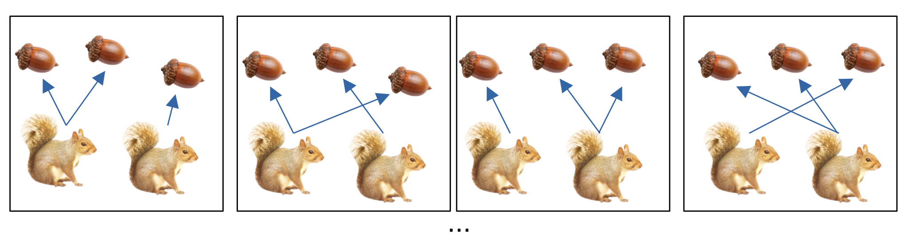
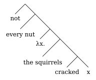
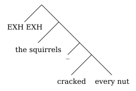

In a nutshell, this dissertation offers a new theory of cumulativity, using insights drawn from homogeneity.
Just as easily as they can refer to single entities, natural languages can refer to collections of entities, hereafter pluralities.
| (1) | a. | Joana opened the box and found a gift inside it. |
| b. | Joana and Marius opened the boxes and found gifts inside them. |
These collections of entities are just like regular entities (Link (1983)). They can have properties of their own, different from the properties of their parts.
| (2) | a. | The potatoes are too heavy for me to carry. |
| b. | Potato n°1 is too heavy for me to carry. … Potato n°215 is too heavy for me to carry. |
With certain predicates \(P\), there is a systematic connection between whether \(P\) is true of a plurality and whether it is true of the plurality’s parts.
| (3) | a. | Joana and Marius smiled. |
| b. | Joana smiled. Marius smiled. |
| (4) | \(\textsf{smiled}(X) \Leftrightarrow \forall x\prec X, \textsf{smiled}(x)\) |
Question: what about two-place predicates?
| (5) | The squirrels cracked the nuts. |
Many situations make this sentences true:

| (6) | Cumulative truth-conditions1: \(\forall\exists\land\forall\exists\) Every nut was cracked by a squirrel. Every squirrel cracked a nut. |
\(\rightsquigarrow\) simplifying assumption: no collective action occurs.
\[\textsf{crack}(Y)(X) \Leftrightarrow \begin{array}{rl} &\forall x\prec X, \exists y\prec Y, \textsf{crack}(y)(x)\\ \land& \forall y\prec Y, \exists x\prec X, \textsf{crack}(y)(x) \end{array} \]
The cumulative truth-conditions seem quite general for transitive predicates in English.
| (7) | a. | The children ate the cookies. |
| b. | The two girls lifted the two boxes. (Kratzer 2003) | |
| c. | The professors graded the tests. | |
| d. | … |
| (8) | a. | The squirrels cracked every nut. |
| b. | The squirrels cracked the nuts. | |
| c. | Truth-conditions: Every squirrel cracked a nut. Every nut was cracked by a squirrel. |
If every is a regular universal quantifier, and composition runs as in Heim and Kratzer (1998):
| (9) | a. | |
| b. | The squirrels cracked every nut. | |
| c. | By compositional rules: The squirrels cracked nut 1 and the squirrels cracked nut 2 and the squirrels cracked nut 3 … \(\forall x\in \textsf{nut}, \textsf{crack}(x)(\iota\textsf{squirrels})\) |
|
| d. | By cumulative denotation of crack: Every squirrel cracked nut 1 and nut 1 was cracked by some squirrel and every squirrel cracked nut 2 and nut 2 was cracked by some squirrel and every squirrel cracked nut 3 and nut 3 was cracked by some squirrel … \(\forall x\in \textsf{nut},\left(\forall y\prec \textsf{squirrels}, \textsf{crack}(x)(y)\right)\land\left(\exists y\prec \textsf{squirrels}, \textsf{crack}(x)(y)\right)\) |
|
| e. | Every squirrel cracked nut 1 and every squirrel cracked nut 2 and every squirrel cracked nut 3 … \(\forall x\in \textsf{nut},\forall y\prec \textsf{squirrels}, \textsf{crack}(x)(y)\) |
|
| f. | Every squirrel cracked every nut. |
This paradox has elicited a diverse range of reactions:
Claim: as far as this data point is concernced, enriched composition is not needed.
Before turning to this claim, I will extend our dataset somewhat.
Claim: all quantifiers over singularities (atomically distributive) yield a cumulative-like reading in object position. This reading is just as unexpected as the cumulative reading of every.
Supporting cases
The case of non-partitive most. There is a problem of cumulative readings of non-universals as well.
| (10) | Non-partitive most | |
| a. | Most athletes lifted the truck. (Crnič 2010) | |
| b. | Most lawyers7 hired a secretary they7 liked. (Kamp and Reyle 2013) | |
This motivates treating non-partitive most as counting singularities:
| (11) | \([\![\text{most athletes}]\!](q) =\#\left\lbrace x\in \textsf{athlete} \middle| \textsf{q}(x)\right\rbrace > \frac12 \#\textsf{athlete}\) |
There is a cumulative-like reading to most:
| (12) | a. | The squirrels cracked most nuts. |
| b. | Truth-conditions: Most nuts were cracked by a squirrel. Every squirrel cracked a nut. |
If a) crack has a cumulative denotation, b) most means the same as it does in (11), then this reading is unexpected:
| (13) | \(\#\left\lbrace x\in \textsf{nut} \middle| \textsf{crack}(x)(\iota\textsf{squirrels})\right\rbrace > \frac12 \#\textsf{nut}\) \(\Leftrightarrow\#\left\lbrace x\in \textsf{nut} \middle| \forall y\prec\iota\textsf{squirrels}, \textsf{crack}(x)(y)\right\rbrace > \frac12 \#\textsf{nut}\) “More than half the nuts were cracked by every squirrel.” \(\neq\) attested truth-conditions |
| (14) | Dataset | |
| a. | The squirrels cracked the nuts | |
| b. | The squirrels cracked every nut. | |
| c. | The squirrels cracked most nuts. | |
| d. | The squirrels cracked thirty nut-\(\varnothing\). (Lebanese Arabic) | |
| e. | The 3 video-games taught every quarterback two new plays. (Schein 1993) | |
Observation: if negative sentences were all that we had to account for, solving the problem of cumulative readings of quantifiers would be extremely simple.
The truth-conditions of negative cumulative sentences sentences are not what we expect: the truth-conditions of (15) are not simply the complement of the cumulative truth-conditions.
| (15) | The squirrels didn’t crack the nuts. | |
| a. | Attested truth-conditions: \(\neg\exists\exists\) No squirrel cracked any nut. |
|
| b. | Expected truth-conditions: \(\neg\forall\exists\vee\neg\forall\exists\) Not every squirrel cracked a nut or not every nut was cracked by a squirrel. |
|
There is homogeneity. Homogeneity is also attested in intransitive sentences.
| (16) | Joana and Marius didn’t smile. | |
| a. | Attested truth-conditions: \(\neg\exists\) Neither Joana nor Marius smiled |
|
| b. | Expected truth-conditions: \(\neg\forall\) They didn’t both smile. |
|
There is also homogeneity in cumulative readings with every:
| (17) | The squirrels didn’t crack every nut. | |
| a. | Attested truth-conditions: \(\neg\forall\exists\) Not every nut was cracked by a squirrel. |
|
| b. | Expected truth-conditions: \(\neg\forall\exists\vee\neg\forall\exists\) Not every nut was cracked by a squirrel or not every squirrel cracked a nut. |
|
Interestingly, cumulative sentences with every yield weaker meanings under negation than do ordinary cumulative sentences.
| (18) | a. | The squirrels cracked the nuts. |
| b. | The squirrels cracked every nut. | |
| c. | Truth-conditions: \(\forall\exists\land\forall\exists\) Every squirrel cracked a nut. Every nut was cracked by a squirrel. |
| (19) | a. | The squirrels didn’t crack the nuts. |
| b. | Truth-conditions: \(\neg\exists\exists\) No squirrel cracked any nut. |
|
| c. | The squirrels didn’t crack every nut. | |
| d. | Truth-conditions: \(\neg\forall\exists\) Not every nut was cracked by a squirrel. |
Why is this observation important? We now have conflicting evidence regarding the meaning of crack
| (20) | a. | The squirrels cracked the nuts. |
| b. | The squirrels didn’t crack the nuts. |
Had we started with negative sentences, we would have written the denotation of crack differently.
| (21) | a. | The squirrels didn’t crack the nuts. |
| b. | \(\neg\textsf{cracked}(\iota\textsf{squirrels})(\iota\textsf{nuts})\) (= expected truth-conditions) \(\Leftrightarrow\) \(\neg\exists x\prec \iota\textsf{squirrels}, \exists y \prec \iota\textsf{nuts}, \textsf{cracked}(y)(x)\) (= attested truth-conditions) |
Call the meaning in (22 a) is the existential denotation for crack.
| (22) | Weak and strong meaning for crack | |
| a. | Existential denotation for crack \(\textsf{crack}(Y)(X) \Leftrightarrow \exists x\prec X, \exists y \prec Y, \textsf{crack}(y)(x)\) |
|
| b. | Cumulative denotation for crack \(\textsf{crack}(Y)(X) \Leftrightarrow \begin{array}{rl} &\forall x\prec X, \exists y\prec Y, \textsf{crack}(y)(x)\\ \land& \forall y\prec Y, \exists x\prec X, \textsf{crack}(y)(x) \end{array}\) |
|
Unlike the positive case, the existential denotation works in both negative sentences with and without every.
| (23) | a. | The squirrels didn’t crack every nut. |
| b. |  |
|
| c. | \(\neg\forall y\in \textsf{nut},\ \textsf{cracked}(y)(\iota\textsf{squirrels})\) \(\Leftrightarrow \neg\forall y \in \textsf{nut}, \exists x\prec \iota\textsf{squirrels}, \textsf{cracked}(y)(x)\) \(=\) attested truth-conditions |
The success of the existential denotation cannot be understated: it covers all other cases considered and more.
The case of most
| (24) | a. | The squirrels didn’t crack most nuts. |
| b. | Attested truth-conditions: It’s not that the case that most nuts were cracked by a squirrel. |
|
| c. | Expected truth-conditions: It’s not that the case that most nuts were cracked by a squirrel. or not every squirrel cracked a nut. |
| (25) | \(\neg\#\left\lbrace x\in \textsf{nut} \middle| \textsf{crack}(x)(\iota\textsf{squirrels})\right\rbrace > \frac12 \#\textsf{nut}\) \(\Leftrightarrow\#\left\lbrace x\in \textsf{nut} \middle| \exists y\prec\iota\textsf{squirrels}, \textsf{crack}(x)(y)\right\rbrace \leq \frac12 \#\textsf{nut}\) “Less than half the nuts were cracked by a squirrel.” = attested truth-conditions |
The video-game sentence.
| (26) | a. | The video-games didn’t teach every quarterback two new plays. |
| b. | Attested truth-conditions: It’s not that the case that every quarterback was taught two new plays by some video-game or other. |
| (27) | \(\neg\forall qb\in \textsf{quarterback}, \exists P\in \textsf{plays}, |P|=2 \land \forall p\prec P, \textsf{taught}(p)(qb)(\iota\textsf{video-games})\) \(\Leftrightarrow\neg\forall qb\in \textsf{quarterback}, \exists P\in \textsf{plays}, |P|=2 \land \forall p\prec P, \exists vg\prec \textsf{video-games},\ \textsf{taught}(p)(qb)(vg)\) “Not every quartereback was taught two plays by a video-game.” = attested truth-conditions |
| (28) | Negative dataset | ||
| a. | \(\checkmark\) | The squirrels didn’t crack the nuts. \(\rightsquigarrow\) not [some squirrel cracked some nuts] |
|
| b. | \(\checkmark\) | The squirrels didn’t crack every nut. \(\rightsquigarrow\) not [every nut was cracked by some nuts] |
|
| c. | \(\checkmark\) | The squirrels didn’t crack most nuts. \(\rightsquigarrow\) not [most nuts were cracked by some nuts] |
|
| d. | \(\checkmark\) | The squirrels didn’t crack thirty nut-\(\varnothing\). (Lebanese Arabic) \(\rightsquigarrow\) not [thirty nuts were cracked by some nuts] |
|
| e. | \(\checkmark\) | The 3 video-games didn’t teach every quarterback two new plays. (Schein 1993) \(\rightsquigarrow\) not [every quarterback was taught two plays by some video-games] |
|
Transitive verbs do not have cumulative denotations. They underlyingly have existential denotations. (cf Bayer (2013), Landman (1989))
\[\textsf{crack}(Y)(X) \Leftrightarrow \exists x\prec X, \exists y \prec Y, \textsf{crack}(y)(x)\]
In positive sentences, adopting the existential denotation misses some inferences of positive sentences (represented in gray).
| (29) | a. | The squirrels cracked the nuts. |
| b. | Truth-conditions: Some squirrels cracked some nuts. Every squirrel cracked a nut. Every nut was cracked by a squirrel. |
| (30) | a. | The squirrels cracked every nut. |
| b. | Truth-conditions: Every nut was cracked by a squirrel. Every squirrel cracked a nut. |
| (31) | a. | The squirrels cracked most nuts. |
| b. | Truth-conditions: Most nuts were cracked by a squirrel. Every squirrel cracked a nut. |
There is a family resemblance between the gray inferences (\(\forall \exists^*\)) ; I will call them exhaustive participation inferences.
Bar-Lev’s account of homogeneity. A similar problem arise outside of cumulativity: to account for the truth-contions of (32 a), we may want to posit the existential denotation in (32 b).
| (32) | a. | The children didn’t smile. \(\rightsquigarrow\) no child slept. |
| b. | \(\textsf{smiled}(X) \Leftrightarrow \exists x\prec X, \textsf{smiled}(x)\) |
| (33) | a. | The children smiled. |
| b. | Truth-conditions: Some child smiled. Every child smiled. |
To account for the presense of the gap in the case of (33), M. Bar-Lev (2018) proposes that a mechanism akin to implicatures, Free Choice implicatures specifically. Namely, the underlying (black) meaning is strengthened to the observed meaning (black+gray).
Rationale:
Transitive verbs do not have cumulative denotations. They underlyingly have existential denotations. (cf Bayer (2013), Landman (1989))
\[\textsf{crack}(Y)(X) \Leftrightarrow \exists x\prec X, \exists y \prec Y, \textsf{crack}(y)(x)\]
In positive sentences, exhaustive participation implicatures arise. They arise through a process of recursive exhaustification.
Analogy with Free Choice implicatures. (M. Bar-Lev 2018)
If (34) is a case of implicature, it is a case of an underlying existential (\(\exists\)) being strengthened to a universal (\(\forall\)):
| (34) | a. | The children slept. |
| b. | Truth-conditions: Some child slept. Every child slept. |
| (35) | a. | The children didn’t sleep. |
| b. | Truth-conditions: No child slept. |
In FC implicatures, an underlyingly disjunctive meaning (\(\vee\)) is strengthened in positive sentences to a conjunctive meaning (\(\land\)).
| (36) | a. | You can have ice-cream or cake. |
| b. | Truth-conditions: You either can have ice-cream or can have cake. You can have ice-cream. You can have cake. |
| (37) | a. | You can’t have ice-cream or cake. |
| b. | Truth-conditions: You can neither have ice-cream or cake. |
Analogy with distributive implicatures. The analogy with FC implicatures is not very apt for cumulative sentences. The desired strengthening is not simply converting an existential to a universal.
| (38) | a. | The squirrels cracked every nut. |
| b. | Truth-conditions: Every nut was cracked by some squirrel. Every squirrel cracked a nut. |
But it does resemble another implicature process: distributive implicatures.
| (39) | a. | Every ambassador speaks Mandarin or Tagalog. |
| b. | Truth-conditions: Every ambassador speaks Mandarin or Tagalog. (\(\forall \gg \vee\)) Some ambassador speaks Mandarin. Some ambassador speaks Tagalog. |
Generalizing \(\vee\) to \(\exists\), this is precisely the type of strengthening observed in positive sentences.
| (40) | a. | The squirrels cracked every nut. |
| b. | Truth-conditions: Every nut was cracked by Scrat or Waggs or Acorn or … (\(\forall \gg \exists\)) Scrat cracked some nut. Waggs cracked some nut. Acorn cracked some nut. … |
Distributive implicature also arise with other quantifiers than every.
| (41) | a. | Most ambassadors speak Mandarin or Tagalog. |
| b. | Truth-conditions: Most ambassadors speak Mandarin or Tagalog. (most $ $) Some ambassador speaks Mandarin. Some ambassador speaks Tagalog. |
| (42) | a. | The squirrels cracked most nuts. |
| b. | Truth-conditions: Most nuts were cracked by Scrat or Waggs or Acorn or … (most \(\gg \exists\)) Scrat cracked some nut. Waggs cracked some nut. Acorn cracked some nut. … |
| Sentence | You can have ice-cream or cake. | The children slept. |
| Underlying meaning | \(\lozenge a \lor\lozenge b\) | \(\exists x\prec\iota\textsf{children}, \textsf{slept}(x)\) |
| Implicature | \(\lozenge a \land\lozenge b\) | \(\forall x\prec\iota\textsf{children}, \textsf{slept}(x)\) |
| Sentence | Everyone speaks Mandarin or Tagalog. | The squirrels cracked every nut. |
| Underlying meaning | \(\forall x, m(x)\vee t(x)\) | \(\forall y\in\textsf{nut}, \exists x\prec\iota\textsf{squirrels}, \textsf{cracked}(x)(y)\) |
| Implicature | \(\exists x, m(x)\land\exists x, t(x)\) | \(\forall x\prec\iota\textsf{squirrels}, \exists y\in\textsf{nut}, \textsf{cracked}(x)(y)\) |
Canonical implicatures:
| (43) | a. | Some people at my office are nice. |
| b. | Truth-conditions: Some people at my office are nice. Not all people at my office are nice |
In the grammatical tradition (Chierchia, Fox, and Spector 2012), these implicatures are derived by application of a covert operator exh, whose meaning is akin to only:
| (44) | exh some people at my office are nice. Prejacent: some people at my office are nice. Alternatives: \(\circ\) all of them are Strengthened meaning: Some people at my office are nice but not all are. |
These inferences we are interested in are different: they are not simply the negation of an alternative to the sentence
| (45) | a. | You can have ice cream or cake. (you can have both) |
| b. | Everyone here speaks Tagalog or Mandarin. (some speak Tagalog ; some speak Mandarin) |
FC implicatures (Fox 2007) and distributive implicatures (M. E. Bar-Lev and Fox 2016) are derived via recursive exhaustification.
| (46) | exh exh You can have ice-cream or cake. Prejacent: exh You can have ice-cream or cake. Alternatives: \(\circ\) exh You can have ice-cream. \(\circ\) exh You can have cake. Strengthened meaning: You either can have ice-cream or can have cake. and it’s not the case that you can only have ice-cream. and it’s not the case that you can only have cake. \(\approx\) you can have both |
| (47) | exh exh Every ambassador speaks Mandarin or Tagalog. Prejacent: exh Every ambassador speaks Mandarin or Tagalog. Alternatives: \(\circ\) exh every ambassador speaks Mandarin. \(\approx\) every ambassador speaks Mandarin and no ambassador speaks Tagalog. \(\circ\) exh every ambassador speaks Tagalog. \(\approx\) every ambassador speaks Tagalog and no ambassador speaks Mandarin. Strengthened meaning: Every ambassador speaks Mandarin or Tagalog and it’s not the case that every ambassador speaks Mandarin and no ambassador speaks Tagalog. and it’s not the case that every ambassador speaks Tagalog and no ambassador speaks Mandarin. \(\rightsquigarrow\) some ambassador speaks Mandarin ; some ambassador speaks Tagaglog. |
By analogy to FC and distributive implicatures:
Assumption: expressions referring to pluralities have their sub-pluralities as their alternatives.
| (48) | exh exh Joana and Marius smiled. Prejacent: Joana or Marius smiled Alternatives: \(\circ\) exh Joana smiled. \(\circ\) exh Marius smiled. Strengthened meaning: Joana or Marius smiled and it’s not the case that only Joana smile and it’s not the case that only Marius smile \(\approx\) both did |
| (49) | exh exh the squirrels cracked every nut Prejacent: every nut was cracked by Scrat or Waggs. Alternatives: \(\circ\) exh every nut was cracked by Scrat. \(\approx\) every nut was cracked by Scrat and no nuts by Waggs. \(\circ\) exh every nut was cracked by Waggs. \(\approx\) every nut was cracked by Waggs and no nuts by Scrat. Strengthened meaning: Every nut was cracked by Scrat or Waggs. and it’s not the case that every nut was cracked by Scrat and no nut by Waggs and it’s not the case that every nut was cracked by Waggs and no nut by Scrat. \(\approx\) Scrat cracked some nuts ; Waggs cracked some nuts |
Assumption: exh is inserted at any predicative position as much it can be (cf also Magri (2011))
| (50) |  |
Exception: exh cannot be inserted or is vacuous under negation (FoxSpector?)
Cumulative readings without quantifiers
| (51) | exh exh the squirrels exh exh cracked the nuts. \(\rightsquigarrow\) exh exh the squirrels cracked every nut. |
Cumulative readings of most.
| (52) | exh exh the squirrels cracked most nuts. \(\rightsquigarrow\) every squirrel cracked a nut. |
| (53) | Most nuts were cracked by Scrat or Waggs. \(\rightsquigarrow\) Scrat cracked some nuts \(\rightsquigarrow\) Scrat cracked some nuts |
Transitive verbs do not have cumulative denotations. They underlyingly have existential denotations. (cf Bayer (2013), Landman (1989))
\[\textsf{crack}(Y)(X) \Leftrightarrow \exists x\prec X, \exists y \prec Y, \textsf{crack}(y)(x)\]
In positive sentences, exhaustive participation implicatures arise. They arise through a process of recursive exhaustification.
Not all verbs yield cumulative truth-conditions.
| (54) | a. | The squirrels outweigh the nuts. |
| b. | Incorrect truth-conditions: Every squirrel outweigh a nut. Every nut is outweighed by a squirrel. |
Yet, the mechanism of recursive exhaustification predicts cumulative readings across-the-board!
Question: What conditions the presence of cumulativity and homogeneity?
\(\rightsquigarrow\) event structure.
First and foremost, my committee. Here are some quotes that I think capture their essence:
My family: my gravity-defying brother, my interpolating sister, my snaky mother, my parsley-loving father.
And many friends and colleagues: Mead Street household, Ling-16, Ling-15, office mates, and especially Sherry C. and her passion for bird-related video games, the Saturday Stroll gang, the board gamers, my friend from LCE Maya N., friends from ENS (provincials not excluded), friends from LLG, the committee baby, the Romance boys, Nina H. & Viola S., an anonymous fellow who went to work around 7am, a great blue heron that one day, Widmerpool’s all too familiar quirks, ….
Outline of the dissertation:
| Chapter 0: | weak meanings for cumulativity |
| Chapter I: | event-less analysis of cumulativity/homogeneity |
| Chapter II: | homogeneity and cumulativity extend to non-plurals like group nouns and substance nounds |
| Chapter III: | more general event-based analysis of cumulativity and homogeneity |
| Chapter IV: | comparison to other event-based approaches |
| Chapter V: | typology of homogeneity and partial analysis of the typology |
| Chapter VI: | connections to distributivity |
| Chapter VII: | non-local cumulativity and alternative compositional approaches to cumulativity |
Chapter 0: Weak meanings for cumulativity
In this chapter, I present cumulative readings. I show that while cumulative readings of referential expressions can receive a simple account, cumulative readings of singular quantifiers seem to challenge standard assumptions about composition. The goal of this chapter is to explain the answer to this challenge pursued in this work. I show that standard assumptions can be maintained if we recognize that cumulative readings are in fact the product of two meaning components: the weak existential meaning and the exhaustive participation inference. The weak existential meaning corresponds to the underlying meaning cumulative truth-conditions and arises through standard compositions rule. It is unaffected by context. The exhaustive participation inference, by contrast, can be cancelled in context and is not present under negation. Connecting this division between existential meanings and exhaustive participation inferences to M. Bar-Lev (2018) ’s work on homogeneity/non-maximality, I propose that exhaustive participation inferences are the result of pragmatic strengthening.
Chapter I: Exhaustive participation as a distributive implicature
This chapter is the first implementation of the program laid out in the previous chapter. I start from the simple idea that the weak existential meanings are encoded in the meaning of the verb. From there, I observe that the exhaustive participation inferences are analogous to Free Choice, in the intransitive case, and distributive implicatures, in the transitive case. Joining two threads in the implicature literature (M. E. Bar-Lev and Fox (2016), Fox (2007)), I derive both Free Choice and distributive implicatures through the same mechanism of recursive exhaustification. With this background in place, I use recursive exhaustification to derive the exhaustive participation inferences of cumulative sentences. The resulting theory captures not only the cumulative readings of singular quantifiers but also the subject/object asymmetries associated with these quantifiers as well as more complicated cases involving multiple quantifiers.
Chapter II: Homogeneity and cumulativity: parts and groups
This chapter is empirical. Its goal is to show that the analysis of homogeneity/cumulativity presented in chapter 1 is too narrow in its purview. Besides pluralities, groups and materially complex objects give rise to both homogeneity and cumulative-like readings. I observe, following previous literature, that these readings are not always available and that there are generalizations on when such readings are available. Unfortunately, I then move on to show that there does not seem to be a way to extend the theory of chapter 1 to the cases here, without missing some of the important generalizations revealed by the empirical investigation. Another analysis is needed.
Chapter III: Event parts for homogeneity/cumulativity
This chapter aims to reduce the phenomenon of homogeneity/cumulativity observed in plurals, groups and complex objects to the parthood structure of events. The generalization is that a homogeneous predicate is a predicate which is true of events with a complex part-whole relation. Based on this generalization, I propose a different analysis of the weak existential meaning of chapter 1. The new analysis is founded on the notion part of events. This proposal sheds light on which predicates give rise to homogeneity and which ones don’t. Furthermore, the introduction of events in the system also allows for a derivation of exhaustive participation inferences without recursive exhaustification, while preserving the good predictions of chapter 1. Because this account of cumulativity relies on the ontology of events rather than the logic of Neo-Davidsonian semantics, it evades the problems discussed in chapter 2 for the event semantics.
Chapter IV: Why events for cumulativity?
This chapter is a critical retrospection on event accounts of cumulativity (Schein (1993), Kratzer (2003), Champollion (2016), Ferreira (2005)). In this chapter, I try to understand why events figure so prominently in many previous accounts of plural semantics. I show that it is not events themselves but the Neo-Davidsonian logic which is critical to the success of the event theories. Abstracting away the event component, I show that this logic has resemblances to dynamic theories of cumulativity. The analogy between dynamic semantics and event semantics also reveals a problem in the event account of cumulative readings of every. Downward-entailing quantification is known but prima facie manageable issue of event semantics. I show that the combination of cumulativity and downward-entailing quantification creates insurmountable scope paradoxes.
Chapter V: Collectivity
This chapter attempts to push further the characterization of homogeneity by investigating collective predication. In this chapter, I propose a tripartite typology of collective and non-collective predicates with respect to their homogeneity properties. I show that this typology partially lines up with traditional typologies of predicates in the plural semantics literature. In the second part of this chapter, I investigate the mereological properties of collective and non-collective predicates, using the inferential properties of these predicates as evidence. This investigation allows me to derive some (but not all) aspects of this typology of homogeneity within the framework of chapter 4.
Chapter VI: Distributivity
This chapter assesses the feasibility of reducing phrasal distributivity to cumulativity or vice-versa. Since homogeneity arises in both cases, it seems desirable to find a way to unite the two phenomena. I discuss the work of M. Bar-Lev (2018) who attempts such a reduction. In this work, homogeneous cumulative operators are assumed, whose granularity is controlled by contextually provided covers. However, this umbrella approach must assume that in certain cases, there are systematic correlations between the choice of the predicate and the nature of the cover, independent from context, and that, in other cases, the choice of the cover is simply determined by context, independently from the predicate. This dual state of affair point to a different non-parsimonious explanation: there are two sources for homogeneity ; one is a distributivity operator with covers determined by context only and the other is the predicate itself, as assumed in this work.
Chapter VII: Loose ends: non-local cumulativity and homogeneity removal
This chapter discusses some loose ends of the analysis of cumulativity. Previous has pointed to the possibility of cumulative readings across non-finite clause boundaries (Beck and Sauerland (2000), Beck (2000), Sauerland (1998)) and even finite clause boundaries (Schmitt (2013), Schmitt (2017), Schmitt (2019), Haslinger and Schmitt (2018)). Most of these cases cannot be dealt with within this work’s theory. I show some properties of biclausal cumulativity by which it differs from monoclausal cumulativity (cumulative readings across negation and cumulative readings of quantifiers) and speculate that the biclausal cases are derived by an altogether different mechanism. Finally, I turn to homogeneity removal by quantifiers. These properties can be explained by hard-wiring exhaustification in the meaning of these quantifiers but the proposed account will not be compelling.
The case of each.
| (55) | each (Thomas and Sudo 2016) | |
| a. | The three video-games taught each quarterback two new plays. | |
| b. | Cumulative truth-conditions: Every one of the quarterback was taught two plays by one of the video-games. Every one of the video-games taught one of the quarterbacks some play. |
|
If taught has a cumulative denotation, this is unexpected:
| (56) | a. | The three video-games taught each quarterback two new plays. |
| b. | The three video-games taught quarterback 1 two new plays and the three video-games taught quarterback 2 two new plays and the three video-games taught quarterback 3 two new plays and the three video-games taught quarterback 4 two new plays … |
|
| c. | Every video-game taught quarterback 1 some plays and every video-game taught quarterback 2 some plays and every video-game taught quarterback 3 some plays and every video-game taught quarterback 4 some plays … |
The case of Lebanese Arabic2 SAT numerals. Ouwayda (2017) notes that in Lebanese Arabic, numeral DPs above 10 must be headed by singular nouns. When they are, they are either singular-agreeing or plural-agreeing.
| (57) | Verb agreement | |||||
| tleetiin | walad | akal-\(\varnothing\)/-u | ʔaaleb | gato | keemel. | |
| thirty | child.SG | ate-3rd.SG/PL | pie | cake | complete | |
| Thirty children ate-SG/-PL a whole cake | ||||||
| (58) | Bound pronuns | ||||
| saʔalt | tleetin | walad | ʕan | bayy-u/on | |
| asked.1st.SG | twenty | child.SG | about | father-his/their | |
| I asked thirty boys about his/their father. | |||||
I refer to these two cases as singular-agreeing transdecimal numerals (SAT numerals) and plural-agreeing transdecimal numerals (PAT numerals). We’ll focus on SAT numerals.
| Thirty boy\(_1\)-SG … V-PL … pro\(_1\)-PL … | PAT numerals |
| Thirty boy\(_1\)-SG … V-SG … pro\(_1\)-SG … | SAT numerals |
SAT numerals are what you would expect a singular quantifier to be: they do not yield collective interpretations.
| (59) | Only distributive interpretations with mixed predicates and singular agreement | |||||
| tleetiin | walad | akal-\(\varnothing\) | ʔaaleb | gateau | keemel. | |
| thirty | child.SG | ate-3rd.SG | pie | cake | complete | |
| Thirty children ate-SG a whole cake. (\(\checkmark\)one cake each, *one cake for everyone) | ||||||
| (60) | Only distributive interpretations when binding in the singular | |||||
| nejjaħet | ʕeshriin | benet | baʕd-ma | sʕellaħet | maʃruuʕ-ah | |
| passed.1s | twenty | girl-ø | after | graded.1s | project-her | |
| I passed twenty girls after I graded her project (\(\checkmark\)individual projects, *collective project) | ||||||
| (61) | SAT numerals don’t combine with collective predicates | ||
| tleetiin | walad | tjammaʕ-\(\varnothing\). | |
| thirty | child.SG | gathered-3rd.SG | |
| * Thirty children gathered-SG. | |||
This points to an analysis in terms of quantification over singularities.
| (62) | \([\![\text{thirty}_{SAT}\text{ child}]\!] = \lambda q. \#\{x | q(x)\land\textsf{child}(x)\} = 30\) |
Just like every and non-partitive most, SAT numerals yield cumulative readings.
| (63) | Context: each journalist interviewed 10 children, asking them questions about their father. | ||||||
| l-sʕaħafiyiin | le-tleeta | saʔalu | tleetin | walad | ʕan | bayy-u | |
| the-journalists | the-three | asked.PL | 30 | children | about | father-his | |
| The three journalists asked 30 boy about “his” father. | |||||||
| (64) | Cumulative truth-conditions: Every journalist asked a child about his father. Thirty children was asked by a journalist about his father. |
The presence of this cumulative reading is unexpected if ask has a cumulative denotation.
| (65) | a. | The 3 journalists asked 30 boy. |
| b. | The number of boys such that the three journalists asked them about their father is 30. \(\#\{x | \textsf{ask}(x)(\iota\textsf{journalists})\land\textsf{child}(x)\} = 30\) | |
| c. | The number of boys such that every journalist asked them about their father is 30. \(\#\{x | \forall y\prec \iota\textsf{journalists}, \textsf{ask}(x)(y)\land\textsf{child}(x)\} = 30\) |